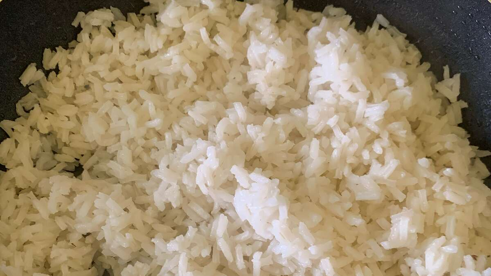

Delicous Rice Recipe

This Rice Tastes Good Alone But Even Better With Other Food
Ingredients:
- 1 tablespoon canola oil
- 2 cups white rice
- ¼ teaspoon garlic powder (Optional)
- salt to taste
- 2 cups boiling water
Steps:
- Heat oil in a large saucepan over medium heat. Add rice, garlic powder, and salt. Pour in boiling water
to cover rice by about 1 inch; bring to a boil. Reduce heat to low, cover, and simmer until water is
absorbed and rice is tender, 20 to 30 minutes.